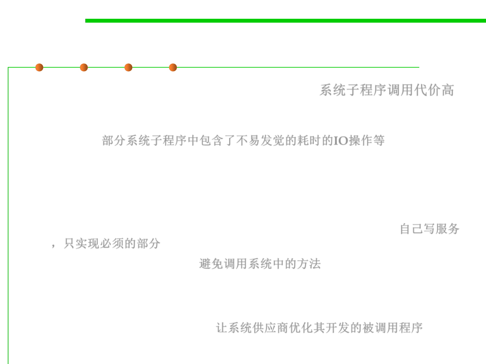

(3) System Calls
8.3 Code Tuning for Performance Optimization
▪ Calls to system routines are often expensive. 系统子程序调用代价高
– System routines include input/output operations to disk, keyboard, screen,
printer, or other device; memory-management routines; and certain utility
routines. 部分系统子程序中包含了不易发觉的耗时的IO操作等
▪ If they’re expensive, consider these options:
– Write your own services. Sometimes you need only a small part of the
functionality offered by a system routine and can build your own from
lower level system routines. Writing your own replacement gives you
something that’s faster, smaller, and better suited to your needs. 自己写服务
，只实现必须的部分
– Avoid going to the system. 避免调用系统中的方法
– Work with the system vendor to make the call faster. Most vendors want
to improve their products and are glad to learn about parts of their systems
with weak performance. (They may seem a little grouchy about it at first,
but they really are interested.) 让系统供应商优化其开发的被调用程序